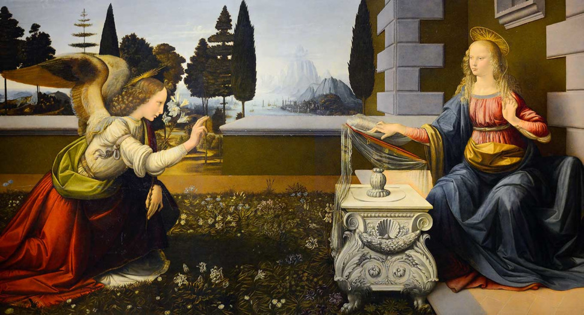
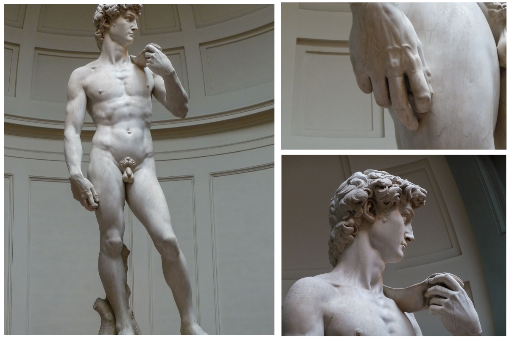
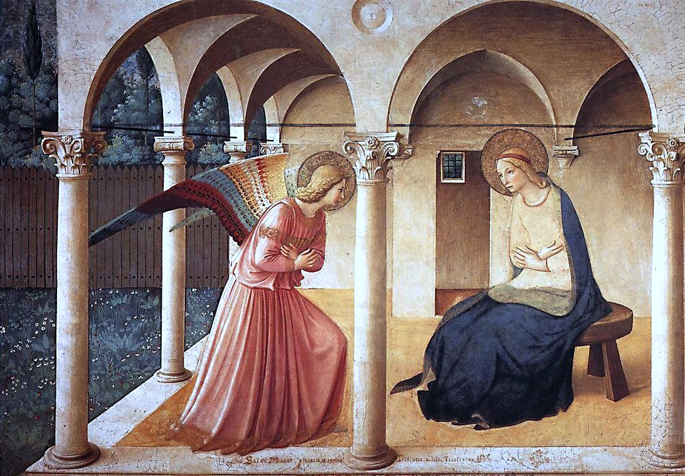

La Nascita di Venere è un dipinto a tempera su tela di lino (172,5 cm × 278,50 cm) di Sandro Botticelli. Realizzata per la villa medicea di Castello, l'opera è attualmente conservata nella Galleria degli Uffizi a Firenze. Opera iconica del Rinascimento italiano, spesso assunta come simbolo della stessa Firenze e della sua arte, faceva forse anticamente collegamento con l'altrettanto celebre Primavera sempre di Botticelli, con cui condivide la provenienza storica, il formato e alcuni riferimenti filosofici.
L'Annunciazione è un dipinto a olio e tempera su tavola (98×217 cm), attribuito a Leonardo da Vinci, databile tra il 1472 e il 1475 circa e conservato nella Galleria degli Uffizi di Firenze. Il quadro è stato trovato nel 1867 nella piccola chiesa di San Bartolomeo a Monte Oliveto, a Firenze.
La cupola di Brunelleschi è la copertura della crociera del Duomo di Firenze; al momento della costruzione era la cupola più grande del mondo e rimane tuttora la più grande cupola in muratura mai costruita (il diametro massimo della cupola interna è di 45,5 metri, mentre quello dell'esterna è di 54,8). Grazie alla fondamentale rilevanza che essa ha rivestito per il successivo sviluppo dell'architettura e della moderna concezione del costruire, essa è tutt'oggi considerata da alcuni la più importante opera architettonica mai edificata in Europa dall'epoca romana. La sua grandezza impedì il tradizionale metodo costruttivo mediante l'ausilio di cèntine, facendo sì che venissero formulate molte ipotesi sulla tecnica costruttiva impiegata.
Il David è una scultura realizzata in marmo (altezza 520 cm incluso il basamento di 108 cm) da Michelangelo Buonarroti, databile tra il 1501 e l'inizio del 1504 e conservata nella Galleria dell'Accademia a Firenze. Largamente considerato un capolavoro della scultura mondiale, è uno degli emblemi del Rinascimento nonché simbolo di Firenze e dell'Italia all'estero. L'opera, che ritrae l'eroe biblico nel momento in cui si appresta ad affrontare Golia, originariamente fu collocata in Piazza della Signoria, come simbolo della Repubblica fiorentina vigile e vittoriosa contro i nemici. Da sempre considerato l'ideale di bellezza maschile nell'arte così come la Venere di Sandro Botticelli è considerata il canone di bellezza femminile, molti ritengono che il David sia l'oggetto artistico più bello mai creato dall'uomo.
La Primavera è un dipinto a tempera grassa su tavola (203 x 314 cm) di Sandro Botticelli, databile per il 1478 circa. Realizzata per la villa medicea di Castello, l'opera d'arte è conservata nella Galleria degli Uffizi a Firenze. Si tratta del capolavoro dell'artista, nonché di una delle opere più famose del Rinascimento italiano. Vanto della Galleria, si accostava anticamente con l'altrettanto celebre Nascita di Venere, con cui condivide la provenienza storica, il formato e alcuni riferimenti filosofici. Lo straordinario fascino che tuttora esercita sul pubblico è legato anche all'aura di mistero che circonda l'opera, il cui significato più profondo non è ancora stato completamente svelato
L'Annunciazione del corridoio Nord è un affresco di Beato Angelico nel convento di San Marco, situato al primo piano, proprio davanti alle scale. L'opera, che misura 230 × 321 cm, è di datazione incerta, che oscilla tra gli anni 1440 e il periodo dopo il ritorno dal soggiorno romano, dopo il 1450. Si tratta una delle opere più famose del maestro ed uno dei migliori esiti in assoluto su questo soggetto.
